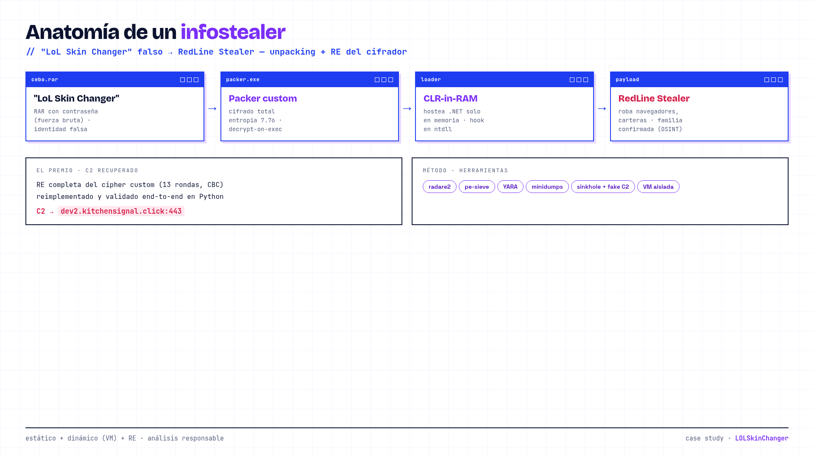
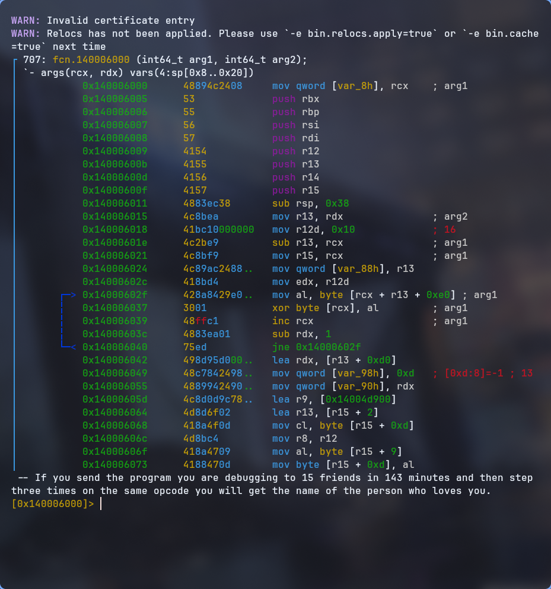
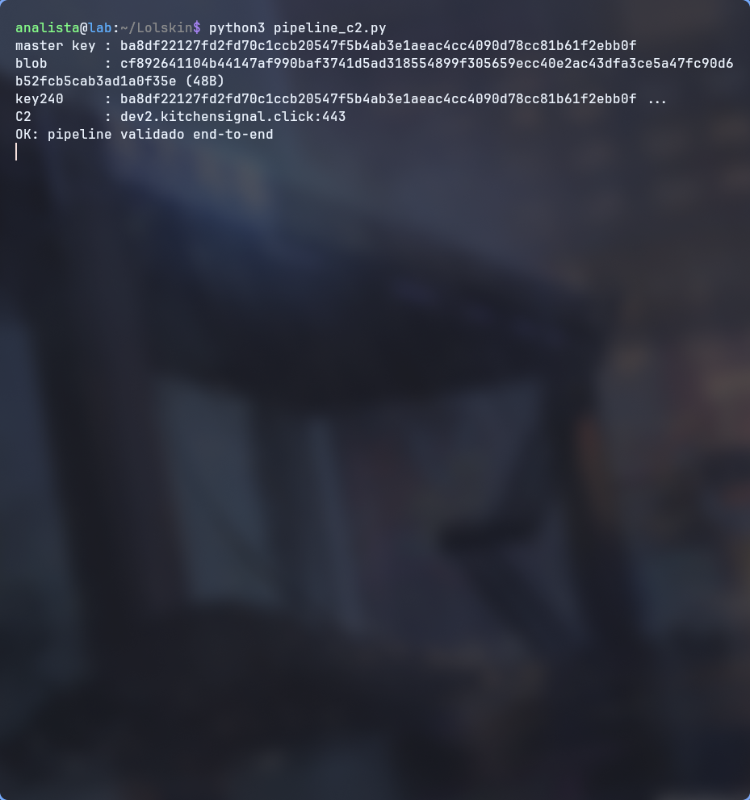
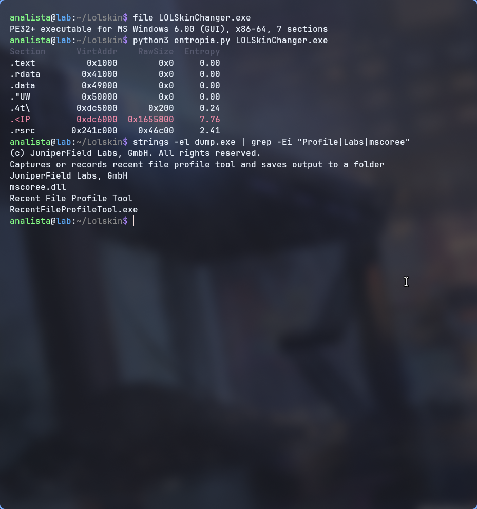

Un "LoL Skin Changer" descargado de internet resultó ser el cebo de RedLine Stealer. Desempaquetado dinámico en VM aislada, barrido de minidumps para capturar la ventana de descifrado, y recuperación del C2 por ingeniería inversa del cifrador custom.

Un RAR con contraseña (hallada por fuerza bruta) distribuía un ejecutable que se hacía pasar por una herramienta legítima. El binario venía cifrado por completo (entropía 7.76, sin imports útiles): la extracción estática del payload era imposible. OSINT confirmó la campaña: la misma estructura aparece como RedLine Stealer (robo de navegadores y carteras) en variantes de "skin changer" de otros juegos.
Triaje del PE, secciones y entropía — firma de un packer custom (secciones raw en 0, masa cifrada con el EP).
Ejecución controlada + pe-sieve: se detectó el unpacking en caliente y un hook en ntdll.NtProtectVirtualMemory.
Volcados 500→2400 ms para cazar la ventana de descifrado (900 ms) y recuperar el loader descifrado (host CLR en RAM).
RE completa del cifrador custom (13 rondas, wrapper CBC), reimplementado en Python y validado end-to-end.
// herramientas usadas
decrypt-on-execute, identidad falsa ("JuniperField Labs").ntdll: descifra/recifra páginas bajo demanda (handler x64 reconstruido).


dev2.kitchensignal.click:443
Familia: RedLine Stealer · packer custom · host-CLR loader · reglas YARA de la campaña. Muestra manejada siempre en VM aislada; análisis responsable.